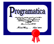

P-logic syntax,
as implemented by PFE
Extracted from
parse2/Parser/PropParser.y
on 2004-09-01.
Notational Conventions
As in the
Haskell 98 syntax reference:
| Notation | Meaning
|
|---|
| [pattern]
| optional
|
| {pattern}
| zero or more repetitions
|
| (pattern)
| grouping
|
| pat1|pat2
| choice
|
assert
| terminal syntax
|
Context-Free Syntax
P-logic is added to Haskell 98 by extending the declaration syntax with
property assertions and predicate definitions,
as defined by the nonterminals
assertion and property below, respectively.
assertion : assert [conid =] prop
property : property conid {var|con} = formula
prop : pqcon {predarg}
| (All | Exist) var [:: ctype] . prop
| -/ prop
| prop propop prop
| pexp === pexp
| pexp ::: formula
| ( prop )
propop : /\ | \/ | ==> | <==>
pexp : { exp }
| qvar
| pqcon
| literal
formula : aformula
| formula -> formula
| formula qconop formula
| -/ formula
| formula propop formula
| Lfp conid . formula
| Gfp conid . formula
| pqcon {predarg}
predarg : { exp }
| qvar
| literal
| aformula
aformula
: pqcon
| [ ]
| ! aexp1
| $ aformula
| ( formulas )
| {| typedpats | prop |}
typedpats : typedpat { , typedpat }
typedpat : pat [:: ctype]
formulas : formula { , formula }
pqconid : CONID | QCONID | tupcon
pqcon : pqconid
| ( gconsym )
Reserverd keywords
- In Haskell
- Two new keywords are reserved:
assert and
property.
Apart from this, all valid Haskell 98 syntax remains valid in the extended
language.
- In P-logic
- All words that are reserved in Haskell 98 are reserved in P-logic.
- The following additional words are reserved within the P-logic syntax:
All, Exist,
Gfp, Lfp,
!, ., $, -/,
/\, \/, ===, ==>,
<==>
Precedences
Precedences, from lowest to highest
| Associativity | Operator
|
|---|
| right | Gfp, Lfp,
All, Exist
|
| right | ->, qconop
|
| left | <==>
|
| right | ==>
|
| left | /\, \/, -/,
===
|
| left | :::
|